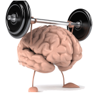

Boosting your brain
Below are 23 rules critical to boost your cognitive functionning. It is actually a virtuous circle, it benefits every area of your life.

#1. Always have a book with you. When waiting: read. It’s not only about reading per se, it’s also about focus and self discipline. You need both to get smarter. How can you solve a problem if you can’t focus? And how would you solve it if you fail to commit yourself to the task?
#2. Meditate . Again, it’s about focus and self discipline. It also improves introspective and self-reflective capacities ( intrapersonal skills ). ( How? )
#3. Play chess (or another game that makes you focus and think deeply, could be Go). It improves problem solving abilities, cognition, critical thinking, logic, goal setting skills, etc… ( More )
#4. Go out of your comfort zone as much as possible. Take risks. Failing is very important in the process of learning.
#5. Do sport. It improves cerebral plasticity and consolidates what you learn. Also, it improves the bodily–kinesthetic intelligence (mind–body union).
#6. Read as much as possible. Now, I am talking about reading per se. It improves your verbal–linguistic abilities , creativity, memory, open-mindness, etc…
#7. Learn another language (and about the culture). It is a brain booster ( link ).
#8. Do a bit of math everyday. Improving your logical–mathematical skills is critical for almost every area of your life.
#9. Always challenge your own ideas and points of view. It is a critical thinking and open-mindness booster.
#10. Socialize as much as possible. Meet people you like and new people as often as possible. Try to have a lot of friends and to create new friendships (care both about quality and quantity). It’s very important for your brain. It improves your emotional intelligence and boosts your social skills. ( Related TED video )
#11. Set and adjust short, middle and long term goals. It boosts your cognition, logic and planning abilities.
#12. Eat healthy. What you eat affects your brain. Actually, being healthy is a significant asset to get the maximum of our mental abilities. Try to be as healthy as possible.

#13. Always look for self-improvement. We are never gonna be perfect and this is actually great, so that we always have something to improve. No time to get bored! It makes you smarter because you will know more about yourself.
#14. Seek for novelty, vary activities. It is good for your creativity, open-mindness, general knowledge, adaptation skills, etc…
#15. Look for new skills. Again cerebral plasticity. ( Draganski et al ). Could be playing an instrument, juggling, counting in Bridge, computer programming, etc…
#16. “ Be realistic in the prediction, optimistic in the action” . Having a positive mind-set enhances your chances of success. In a way, it makes you smarter.
#17. Know yourself. you have to understand when your emotions are getting over your rational thinking. It improves introspective and self-reflective capacities ( intrapersonal skills )
#18 Travel as much as possible. Traveling is good for everything :). Expand your horizon!
#19. Listen to various types of music. Musical intelligence is something that can be improved.
#20. Get in touch with art. Painting, literature, sculpture, architecture, cinema, theater, dance, poetry, photography and so on… It is fun, interesting, fascinating and makes you smart (expand your problem-solving skills, open-mindedness, etc…). What else?
#21. Get in touch with your own creativity. Do artistic activity. Paint, write, sculpt, dance, etc… It helps your brain to process information, improves your creativity/imagination. As Einstein stated: “ Imagination is more important than knowledge. For knowledge is limited to all we now know and understand, while imagination embraces the entire world, and all there ever will be to know and understand”.
#22. Have enough sleep. You need enough sleep to consolidate what you learn.
#23. Last but not least: Have fun! Enjoying life is critical to get smarter. You have to keep the willing of learning.